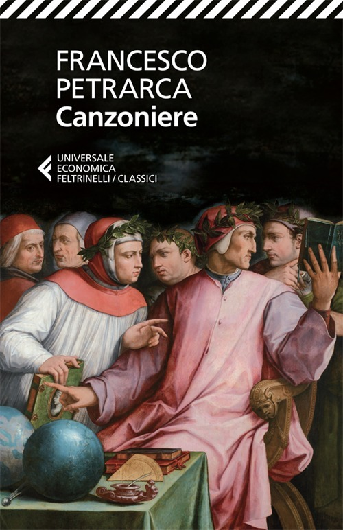

3:39 · 1 OPERA
Il vaso pieno: un racconto Zen
Il filo del discorso
Un maestro mostra ai discepoli che un vaso apparentemente pieno può ancora accogliere oggetti più piccoli, sabbia e infine acqua. Il racconto trasforma la dimostrazione in una riflessione sulle priorità: se tempo ed energie vengono occupati prima dalle questioni banali, non rimane spazio per ciò che conta. L’acqua rappresenta poi l’amore, capace di entrare anche in una vita che sembra già colma. La chiusura lega la pienezza alla capacità di riconoscere le proprie priorità e di amare.
I libri nel discorso

Chiare, fresche et dolci acque
Identificazione probabile
Copertina: Feltrinelli, Universale Economica Classici, 2013
Copertina del Canzoniere, raccolta che contiene la canzone Chiare, fresche et dolci acque (Rvf 126). Non è l'edizione identificata nel video.
A 189,33 secondi il narratore paragona l’amore alle «acque chiare, fresche e dolci» di cui scrive un poeta.
Passaggio 3:09 ↗ · Fonti e libro ↗